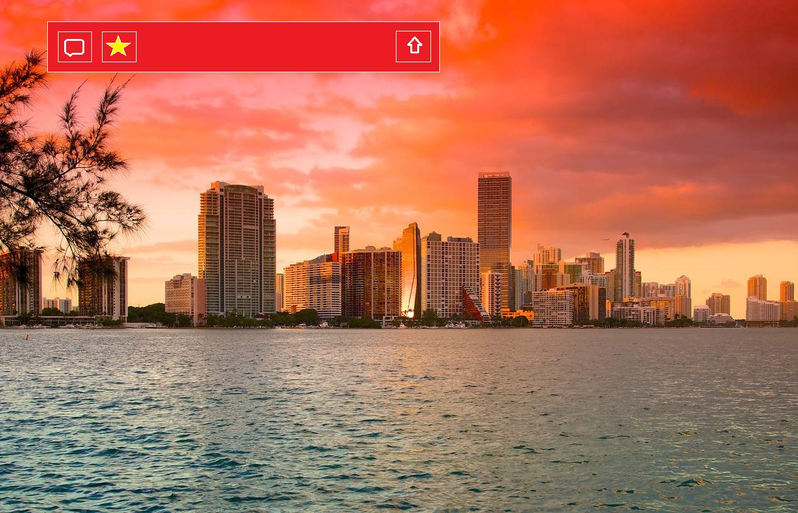
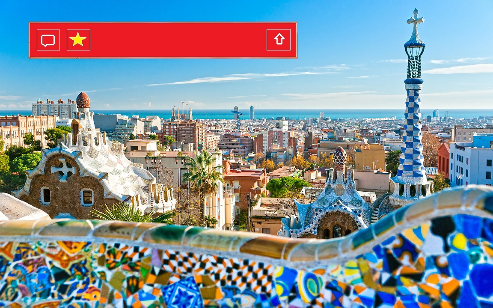
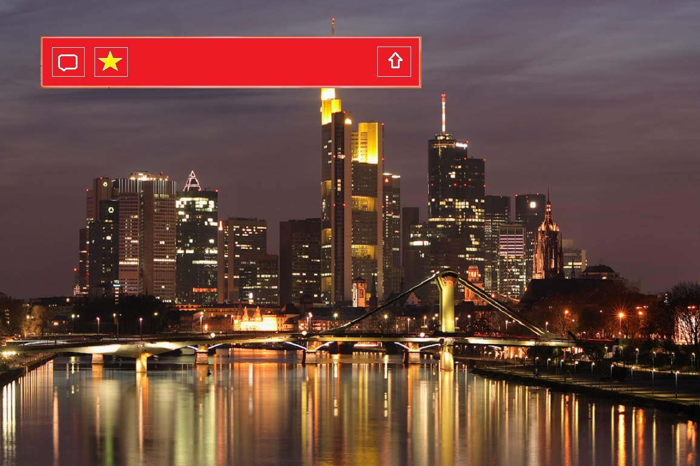

<!DOCTYPE HTML>

<html>
  
<head>
  
    
<script src="http://www.webglearth.com/v2/api.js">
</script>
    
<script>
      
function initialize() 
{
        
var earth = new WE.map('earth_div');
        
WE.tileLayer('http://{s}.tile.openstreetmap.org/{z}/{x}/{y}.png').addTo(earth);

        
var marker = WE.marker([25.7753, -80.2089]).addTo(earth);

       
marker.bindPopup('<b>Miami, FL</b><br><iframe src="miami.html" width=550px height=350px></iframe>&nbsp;&nbsp;&nbsp;',{maxWidth: 1125, closeButton: true});

  		
var marker2 = WE.marker([40.7127, -74.0059]).addTo(earth);

       
marker2.bindPopup('<b>New York City, NY</b><br><iframe src="newyork.html" width=550px height=350px></iframe>&nbsp;&nbsp;&nbsp;',{maxWidth: 1125, closeButton: true});

		
var marker3 = WE.marker([41.3833, 2.1833]).addTo(earth);

        
marker3.bindPopup('<b>Barcelona, Spain</b><br><iframe src="barcelona.html" width=550px height=350px></iframe>&nbsp;&nbsp;&nbsp;',{maxWidth: 1125, closeButton: true});
        
		
var marker4 = WE.marker([50.1167, 8.6833]).addTo(earth);

        
marker4.bindPopup('<b>Frankfurt, Germany</b><br><frankfurt src="iframe4.html" width=550px height=350px></iframe>&nbsp;&nbsp;&nbsp;',{maxWidth: 1125, closeButton: true});

        
earth.setView([37.1950, -93.2861], 4);
      
}
    </script>
    
<style>
      
html, body{padding: 0; margin: 0; background-color: black;
}
      
#earth_div{top: 0; right: 0; bottom: 0; left: 0; position: absolute !important;}
      
      
    
</style>
    
<title>Radux</title>
  
</head>
  
<body onload="initialize()">
   
<div id="earth_div">
<a href="StartRadux.html">
<a href="no2.html">
</div>
  
</body>

</html>
